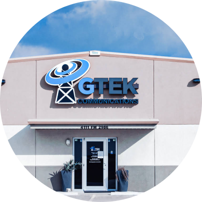

| Homepage | Contact Me | My Hobbies | Troubleshooting Tools |
|---|
|  |
Michael Andrew Cordero CER at Gtek Communications This is my current job at the moment. I help out customers with billing, accounts, tech support, tickets, or any other issues or questions they might have. Gtek Communications is an Internet Service Provider (ISP) and they mostly target the rural areas. We might not be like Spectrum or AT&T but we are most definitely better than other ISP out there that target rural areas. Gtek 360 has come a long way with its hardware and software and as for bandwidth our towers and APs are close to our customers to make sure they get the best signal and service as well. Our services include Internet, Security, Streaming Tv, and Digital phones, and we even have social media for giveaways and news updates. To find out more about Gtek Communications click the above. |